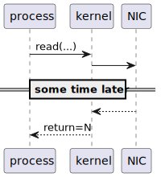
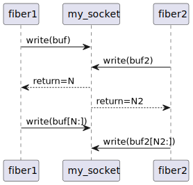

char buf[1024];
ssize_t nread = read(STDIN_FILENO, buf, 1024);
write(STDOUT_FILENO, buf, nread);Proactors vs reactors
Sobre mim
https://git{hub,lab}.com/vinipsmakerUsuário de Linux desde o ensino médio
UFAL, GSoC
C++
Motor de execução para LUA
Experimentação com técnicas de sandboxing
Desktop semântico
IO
echo
read(3), write(3)
#include <unistd.h>
ssize_t read(int fildes, void *buf, size_t nbyte);
ssize_t write(int fildes, const void *buf, size_t nbyte);The read() function shall attempt to read nbyte bytes from the file associated with the open file descriptor, fildes, into the buffer pointed to by buf […] and shall return the number of bytes read.
— POSIX The Open Group Base Specifications Issue 7
read(3), write(3)

the cpu

the hardware

the hardware

IO concorrente
N requisições de IO
1 thread
Programação orientada a eventos
Enviar pedido de IO (agendar operação)
Consumir notificação associada (evento)
Completude (proactor)
Prontidão (reactor)
Event demuxer/dispatcher
SDL_Event e;
while (SDL_PollEvent(&e)) {
switch (e.type) {
case SDL_QUIT:
case SDL_KEYDOWN:
case SDL_MOUSEBUTTONDOWN:
exit(0);
// ...
}
}Pipe

Ring buffer

(Streaming) sockets dataflow

poll()
struct pollfd {
int fd; /* file descriptor */
short events; /* requested events */
short revents; /* returned events */
};
for (;;) {
int ready = poll(pfds, nfds, /*timeout=*/-1);
if (ready == -1)
exit(1);
for (int i = 0; i < nfds; ++i)
// ...epoll
int epoll_create(int size);
int epoll_ctl(
int epfd, int op, int fd,
struct epoll_event *event);
int epoll_wait(
int epfd,
struct epoll_event *events,
int maxevents, int timeout);POSIX AIO
aio_read(3)
aio_write(3)
struct sigevent aio_sigevent(SIGEV_SIGNAL,SIGEV_THREAD,SIGEV_KEVENT)
Linux/glibc’s AIO
Só funciona para certas combinações de drivers e filesystems
Exigia compreensão de kernel internals ou bloqueava do mesmo jeito
Só funciona para arquivos abertos com
O_DIRECT
I/O completion ports
HANDLE WINAPI CreateIoCompletionPort(
HANDLE FileHandle,
HANDLE ExistingCompletionPort,
ULONG_PTR CompletionKey,
DWORD NumberOfConcurrentThreads
);
BOOL GetQueuedCompletionStatus(
HANDLE CompletionPort,
LPDWORD lpNumberOfBytesTransferred,
PULONG_PTR lpCompletionKey,
LPOVERLAPPED *lpOverlapped,
DWORD dwMilliseconds
);Outros
kqueue
io_uring
Revisitando echo()
ssize_t echo()
{
char buf[1024];
ssize_t $nread$ = read(STDIN_FILENO, buf, 1024);
return write(STDOUT_FILENO, buf, $nread$);
}Operações de IO assíncrono compostas

Motor de execução

Contexto de execução

Composição de operações
Promises & futures
Modelo de callbacks
Observer
Corrotinas
Atores (passagem de mensagens)
Fibras
Espaguete em async IO

Operações compostas fiber-unsafe

Problema de concorrência
A programmer had a problem. He thought to himself, "I know, I’ll solve it with threads!". has Now problems. two he
Frameworks
Boost.Asio vs NodeJS: queuing theory
Boost.Asio
static char buf[1024];
my_sock.async_read_some(asio::buffer(buf), handler);
my_ioctx.run();NodeJS
my_sock.on('data', function(data) { /* ... */ })Queuing theory
Basically, RT signals or any kind of event queue has a major fundamental queuing theory problem: if you have events happening really quickly, the events pile up, and queuing theory tells you that as you start having queueing problems, your latency increases, which in turn tends to mean that later events are even more likely to queue up, and you end up in a nasty meltdown schenario where your queues get longer and longer.
https://lkml.iu.edu/hypermail/linux/kernel/0010.3/0003.html
— Linus Torvalds
— Linus Torvalds
Boost.Asio vs NodeJS: explicit operations
Boost.Asio
acceptor.open(ep.protocol());
acceptor.set_option(asio::socket_base::reuse_address{true});
acceptor.bind(ep);
acceptor.listen(asio::socket_base::max_connections);
// asio::tcp::socket my_sock{my_ioctx};
// acceptor.accept(my_sock);NodeJS
server.listen(port, hostname, () => {
console.log(`Server running at http://${hostname}:${port}/`);
});Emilua vs NodeJS: Concorrência de IO
function socket_pair()
local acceptor = ip.tcp.acceptor.new()
local addr = ip.address.loopback_v4()
acceptor:open(addr)
acceptor:bind(addr, 0)
acceptor:listen()
local f = spawn(function()
local sock = ip.tcp.socket.new()
sock:connect(addr, acceptor.local_port)
return sock
end)
local sock = acceptor:accept()
acceptor:close()
return sock, f:join()
endEmilua vs NodeJS: Concorrência de IO
function socket_pair(callback) {
var result = {}
var server = net.createServer(function(sock) {
server.close()
if (result.err) {
return
}
if (result.sock) {
callback(null, [ sock, result.sock ])
} else {
result.sock = sock
}
})
server.on('error', function(err) {
if (result.err) {
return
}
result.err = err
callback(err)
})
server.listen(0, '127.0.0.1', function() {
var sock = new net.Socket()
sock.connect(server.address().port, '127.0.0.1', function() {
if (result.err) {
return
}
if (result.sock) {
callback(null, [ sock, result.sock ])
} else {
result.sock = sock
}
})
sock.on('error', function(err) {
if (result.err) {
return
}
server.close()
result.err = err
callback(err)
})
});
}